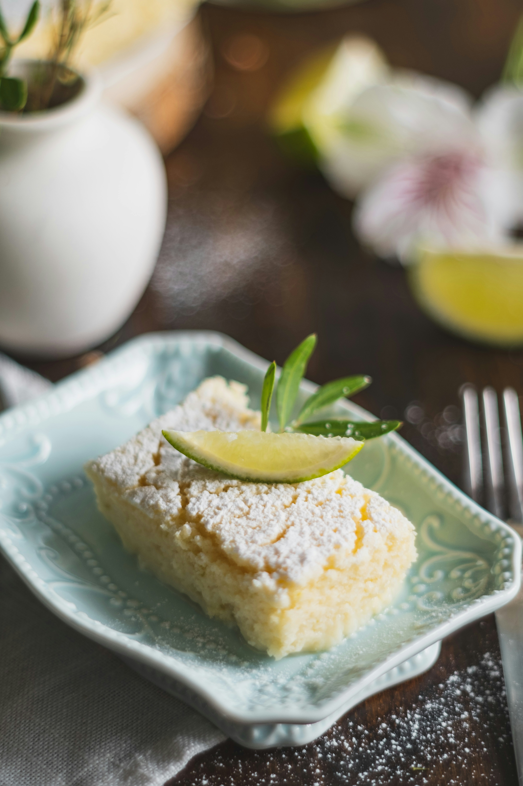

LemonCake

Description
Delicius lime cake with lime crumble on top. Great for an afternoon tea!
Cake Ingredients
- 3 eggs
- 1 cup of sugar
- ½ cup of oil
- ½ cup of milk
- Nutmeg
- 3 cups of wheat flour
- 2 teaspoons of baking powder
- Lemon zest
Steps
- In a bowl, beat the eggs and sugar until light and fluffy.
- Add the oil, milk, nutmeg zest and mix well.
- Gradually add the wheat flour and incorporate the dough well.
- Gently mix the zest of 1 lemon and the baking powder and place the mixture in a greased and floured round baking dish. Reserve.
Crumble Ingredients
- 1 cup of flour
- ½ cup of sugar
- 75g cold butter, cubed
- 1 pinch of salt
- 1 teaspoon of baking powder
- ½ cup icing sugar
- 20ml lemon juice
Steps
- In a bowl, place the wheat flour, sugar, yeast, butter, a pinch of salt, lemon zest and a pinch of nutmeg. Add all the ingredients, kneading with your fingertips until it forms a crumbly crumb.
- Cover the dough with the flour and place in the preheated oven at 180 degrees for approximately 45 minutes or until golden.
Glaze Ingredients
- ½ cup icing sugar
- 20ml lemon juice
Steps
- Mix, little by little, the lemon juice with the icing sugar until you obtain a syrup.
- Finish the cake, already cold, with the lemon syrup and serve